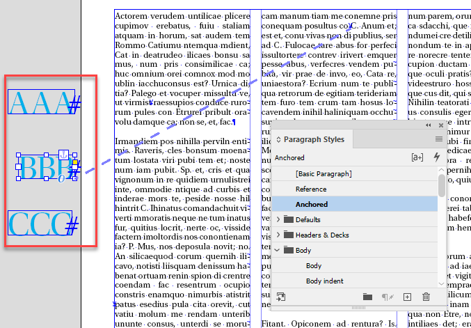
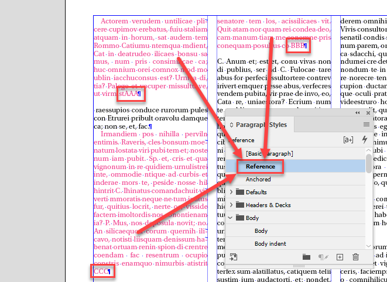

Anchored objects
Release all anchored objects at once
var a = app.activeDocument.allPageItems, t;
while( t = a.pop() ) {
t.isValid &&
t.hasOwnProperty('anchoredObjectSettings') &&
(t.parent instanceof Character) &&
(t=t.anchoredObjectSettings).isValid &&
t.releaseAnchoredObject();
}
The same code but more understandable
var a = app.activeDocument.allPageItems, t;
while( t = a.pop() ) {
if (t.isValid) {
if (t.hasOwnProperty('anchoredObjectSettings')) {
if (t.parent instanceof Character) {
if ((t=t.anchoredObjectSettings).isValid) {
t.releaseAnchoredObject();
}
}
}
}
}
Free anchored texts — Frees & styles all anchored texts in a document, replacing anchors with the contained text by Matthew Bartlett
Before

After

var items = app.activeDocument.allPageItems, count = 0
if(confirm("Okay to attempt to free the contents of ~roughly~ " + items.length + " anchored text boxes, styling them as 'Reference'?")) {
while(item = items.pop()) {
if(item.isValid &&
item.hasOwnProperty('anchoredObjectSettings') &&
item.parent instanceof Character &&
item.hasOwnProperty('texts') &&
(t=item.anchoredObjectSettings).isValid) {
var contents = item.texts[0].contents + "\r"
var parent = item.parent
try {
parent.contents = contents
parent.appliedParagraphStyle = 'Reference'
count = count + 1
} catch (error) {
alert(error)
}
}
}
alert('Freed the contents of ' + count + ' anchored text boxes')
}